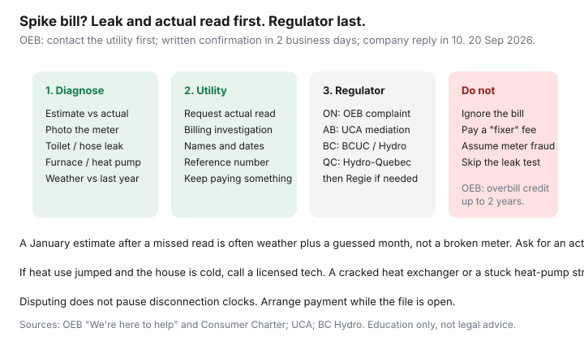

Utilities · Canada
How to Dispute a Sudden High Utility Bill in Canada (Meter, Estimate, and Leak Checks)
A sudden high bill triggers two bad moves: panic-pay a number you do not understand, or ignore the envelope until it is an arrears file. The grown-up path is slower and usually cheaper: decide whether the use is real, then decide whether the math is wrong.
If you already cannot pay, open a payment arrangement the same week you dispute. The two files can coexist. For Ontario emergency help see LEAP.
Disclosure: Energy monitors are an offer type that can help you see whether a spike is a real load. Saving Optimizer may earn a commission if we later add partner links. We do not currently claim monitor-brand or utility partnerships. This is education — not a billing decision.
Key takeaways
- If the bill says estimate, request an actual read and photograph your meter the same day. Many “spike” bills are two months of weather plus a guess.
- Rule out leaks (toilet, hose bib, softener), a stuck heat-pump strip, a dying fridge, and a spare freezer before you accuse the meter.
- Build a file: last 12 months of kWh or m³, HDD or “was it colder,” guests, a new EV, and every call (name, date, reference).
- Escalate: utility investigation → provincial path (OEB in Ontario — confirm in 2 business days, company reply in 10; UCA in Alberta; BC Hydro / BCUC; Hydro-Québec then the Régie). OEB Consumer Charter: overbill credits can run up to two years.
- A dispute is not a payment holiday. Arrange what you can so disconnection clocks do not run in the background.
Estimate vs actual read: request an actual meter read
Utilities estimate when the meter is buried, the driveway is a snowbank, or a remote read fails. The next actual read then dumps two (or more) periods onto one bill. That looks like a broken meter. It is often arithmetic.
- Find the line that says estimated, actual, or customer read.
- Photograph the electricity and gas meters (dial or digital) with the date. For smart meters, photograph the display the bill tells you to use.
- Ask for an actual read or a billing investigation. Offer a customer read if the tariff allows it.
- Compare the photo to the bill’s “previous” and “present” numbers. A swapped digit is rare and worth a calm email.
Ontario’s Distribution System Code allows estimated billing when a read is not available. The fix is a real read and a corrected bill, not a rant about smart meters on day one.

Rule out leaks and phantom loads before disputing
Do the boring tests the same afternoon:
- Water / sewer (if that bill spiked or you have a well pump on hydro): silent toilet leak, irrigation left on, a softener stuck in regen. Meter the water service with everything off.
- Gas: walk the house for a raw-gas smell (leave and call the emergency number if you have one). Check the fireplace pilot, a garage heater, and whether the water-heater dial moved. See Enbridge anatomy for weather vs use.
- Electricity: spare fridge, garage heater on thermostat fail, heat-pump auxiliary strips locked on, a dryer venting into a lint plug (long cycles). A plug-in monitor finds 120 V pigs; phantom hunting is the method.
- If the house is cold and the bill is huge, skip the Facebook meter-fraud thread and call a licensed tech.
Documenting usage history and weather context
Print or export 12–24 months of kWh or m³. Write one line per month: use, estimated Y/N, and a weather note (“colder than last January,” “worked from home,” “EV arrived in March”). Degree-days are nice; direction is enough. A new baby, a roommate, a broken window, or a dead furnace filter belongs in that log. Attach it to the utility email so you are not re-explaining on call four.
Formal complaint paths: utility → regulator (OEB / UCA / etc.)
| Step | What to do | Typical clock |
|---|---|---|
| 1. Utility | Billing investigation, actual read, written names and a reference number | Ask for a date they will call back |
| 2. Ontario OEB | If unresolved, file with the OEB (“We’re here to help”) | Written confirmation in 2 business days; company contacts you within 10 business days |
| 3. Alberta UCA | Mediation on billing and estimated-read fights | UCA is the consumer door, not a court |
| 4. B.C. / Québec | BC Hydro complaints process then BCUC if needed; Hydro-Québec then the Régie | Stay on the utility file until they close it in writing |
OEB Consumer Charter (used 20 Sep 2026): you can question accuracy; if you were overbilled, the utility must credit the amount mistakenly billed for a period of up to two years. That is not a guarantee you were overbilled. It is the look-back if they were.
What not to do: ignoring bills during a dispute
Disputing does not freeze late fees or the disconnection process. Pay the undisputed portion — last year’s average, or the amount you agree is weather — and say so in writing. Ignoring the bill turns a meter argument into an arrears argument. Scam “bill fighters” who want a retainer to call hydro are not your regulator.
When a contractor should inspect heating equipment
Call a licensed technician when use jumped, the house is uncomfortable, you smell burnt dust or fuel, the heat pump runs and the air is cool, or the furnace short-cycles. A cracked heat exchanger, a failed zone valve, or auxiliary heat locked on is a safety and a bill problem. A dispute form will not fix it. If you own the house, this is a same-week call. If you rent, it is a written repair request — heat that does not heat is a housing issue as well as a hydro issue.
Education only, not legal advice and not a finding that your meter is wrong. Most spike bills are weather, estimates, or a machine. A few are math errors. The file you keep is how those few get fixed.
Sources & date stamps
- OEB, “We’re here to help” — contact the company first; confirmation in 2 business days; company reply in 10 (used 20 Sep 2026).
- OEB Consumer Charter — right to question bills; overcharge credits for up to two years.
- OEB Distribution System Code — estimated billing when no read is available (context, not a DIY legal brief).
- Alberta UCA billing / payment FAQ; BC Hydro customer complaint paths — provincial doors after the utility.
Frequently asked questions
My bill says estimated. Is that a billing error?
Not by itself. Utilities estimate when they cannot read the meter. Ask for an actual read and compare it to your photo. The catch-up bill can look like a spike.
Should I stop paying while I dispute?
No. Pay what you can or the portion you do not dispute, and open an arrangement for the rest. A dispute is not a disconnection holiday.
How do I complain in Ontario after the utility stalls?
Use the OEB consumer complaint process. They aim to confirm in 2 business days and have the company contact you within 10. Keep your reference numbers.
Can a meter really run fast?
It is possible and uncommon. Leaks, auxiliary heat, estimates, and new loads are the usual story. Ask for a meter test only after those are boringly ruled out — some utilities charge if the meter is accurate.
When is a high bill a contractor issue?
When the house is cold or oddly hot, the equipment sounds wrong, or use jumped with no weather or occupancy change. A licensed tech first; the regulator second.